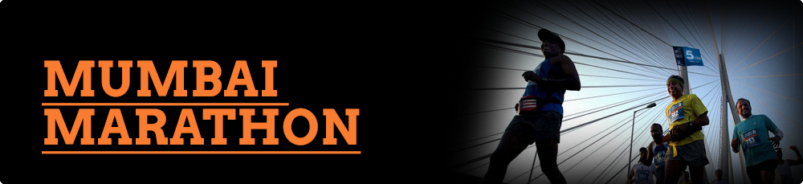
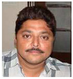

Environment
Procam International is one of India’s leading sports management companies, involved in the promotion of national and international sporting events, sports consultancy and live television programming. Four world class and prestigious running events – the Standard Chartered Mumbai Marathon (SCMM), the Airtel Delhi Half Marathon, the TCS World Bangalore 10k and the Jamba Cloud Hyderabad 10k – are properties that Procam owns, accredited by the Association of International Marathon (AIMS) and certified by the International Association of Atheletic Federations (IAAF) as Gold Label events.
The Standard Chartered Mumbai Marathon (SCMM) is Asia’s largest and richest marathon. Its inaugural edition was held in 2004 and over the years it has grown in stature and is now among the world's top 10 Marathons.
Concept PR, India's leading public relations agency, with the distinction of being one of the top Sports PR firms of India, works closely with the Procam International and Standard Chartered Mumbai Marathon teams. The partnership is putting Mumbai on the international map, and influencing the life of Indians regardless of age, financial status and social standing, year on year.
Agency Brief
- Showcase the SCMM as a world-class event and emphasize on the fact that the marathon represents the spirit of Mumbai
- Help portray that the marathon is not just a sporting event but one that influences society at large
- Deliver an impactful message to viewers and readers about SCMM, the host city and long term benefits
Objective
- To showcase the 9th Standard Chartered Mumbai Marathon 2012 as a world class event
- Create awareness amongst the media and other stake-holders and encourage them to highlight the fact that Mumbai Marathon is synonymous with the spirit of Mumbai
- In addition to the sports pages, portray the city, lifestyle and business aspect of the event thereby giving it a wider audience base
Challenges
From a PR perspective, following are some of the biggest challenges we faced when trying to execute the media relations campaign for SCMM 2012:
- Being a cricket crazy nation, it is a challenge for any non-cricketing sport to get significant media space
- Generate awareness amongst all stake holders – Media, corporates, NGOs and the citizens of Mumbai
- Take the event outside the sports pages and highlight the spirit of the city of Mumbai, showcase it as the running hub of the country and focus on various advantages and positive changes brought about by the Standard Chartered Mumbai Marathon
- Apart from the sports reportage, highlight the charity angle, corporate involvement, Bollywood presence, health and fitness quotient – all of which has been brought about by the Standard Chartered Mumbai Marathon
- Sustain the campaign and keep up the momentum for a period of six months – from the time the registrations open till the time of the main event in January 2012
Strategic Approach
Focus was on three core areas of the event:
- Sports specific
- NGOs & Charity Angle – involved tremendous participation from corporate houses and Bollywood personalities
- City specific
We tried to cater to all these with targeted efforts towards each media house; be it print, online or electronic
I. Media Relations
- Conduct bridge building meeting with sports, city and lifestyle editors to generate interest
- Identify and extend target media – from sports to lifestyle and business to city pages to gain enhanced visibility and recall value
- Focus on pitches keeping in sync the tone of each publication/magazine or TV channel
II. Sports Related
- Meet the sports editors, reporters, assist them with information on the growth of the marathon over the years
- Focus on the participation of both Indian and International top-notch professional athletes and facilitate interviews with them
- Countdown stories, increasing number of participants each year, stories on the overwhelming response received to registration and that it was closed within two days of opening
- Stories on Procam International being credited with bringing about the “Running Revolution in India”
- Management of the media centre for a week with over 100 media presence
III. NGO & Charity Angle
- Special presentation made to the event charity partners, United Way and approximately 75 different NGOs on optimum usage of PR and efforts towards getting necessary credit for efforts in the field
- A suggestion like – it’s not always necessary to have celebrities endorse your cause but associate with personalities that have made a difference to society
- Speak to these personalities, get first-hand experience on their struggles, approach different media in a focussed manner, and encourage them to publicise such human-interest stories in the build-up to the event
- Testimonials from various celebrities on the causes they support, interviews photo-shoots, training countdowns among other such varied story angles
- Focus on the business aspect – Highlight the huge corporate participation and fact that it has increased tremendously over the years
IV. City Specific
- Individual meetings with each of the city editors of mainline English and regional language newspapers
- Star participants at the event who have overcome their weaknesses to emerge victorious
- Highlight the advanced technology used in the event which has benefited in the superb coverage of the event via live broadcasting from a helicopter above
- Share information on the arrangements, involvement from city services – like medical, security, food, traffic police, municipal services & hospitality among others
- Create unique photo-opportunities in the lead-up to the event
Events and activities handled to maximize and generate media mileage
- Registration for SCMM 2012 began with a launch event ambassador, John Abraham
- Launch of the SCMM 2012 Coffee Table Book by well known writer and columnist, Anil Dharkar
- Runners meet for various participants
- Inauguration of the Get Active Expo
- Launch of the lead BMW vehicle
- Announcement of the International event ambassador
- Interactions with Elite Indian & International athletes
- Pasta Lunch with dignitaries
Achievements
- SCMM 2012 delivered a total of 2,270 news stories of print coverage across all major publications/magazines in India giving a total value of INR 151,46,09,241 - the highest ever.
- SCMM 2012 received a total of 1250 clips across all major television channels amounting to a total value of INR 25,65,84,000.
- Tremendous response from English & Regional Media with 1,241 clips and 1,029 clips respectively
- SCMM Media reach was far and wide with the following cities reporting on it actively and extensively - Ahmedabad, Ahmednagar, Bangalore, Belgaum, Bhopal, Chandigarh, Chennai, Goa, Hyderabad, Indore, Kolkata, Kanpur, Mumbai, Navi Mumbai, New Delhi, Nashik, Pune, Punjab, Shimla, Udaipur
- The coverage we received for SCMM was 95% positive
- On-site media management for one week at the event media centre and handled over 200 accredited media on a daily basis
- Clear indication in the shift of reportage and the kind of stories appearing with more focus on the city stories and stories of human interest nature
- Reports and features across English and regional publications like The Times of India, Hindustan Times, Mid-day, DNA, The Indian Express, The Asian Age, Afternoon, Maharashtra Times, Loksatta, Lokmat, Prahaar among others
- Stories in leading financial newspapers such as The Economic Times, The Hindu Business Line and Mint about the growth of the event, first-person columns by experienced and novice marathoners especially those from the corporate world
- Features, interviews and half hour specials on some of the leading TV channels like NDTV 24x7, Times Now, CNN IBN, Star Maaza, Sahara Samay, ET Marathi, News X, TV 9, Aaj Tak, Doordarshan among others.
Media Values
Concept PR's partnership with Procam International for all work and editorial media coverage received, has ensured that the PR Value generated in India for the event, is in excess of INR 151,46,09,241.
Client Testimonials

“The Standard Chartered Mumbai Marathon 2012 media coverage has shattered all records, with the Media Evaluation Value (MEV) crossing a staggering Rs. 151 crores. This is indeed amazing. The event has been covered extensively across English and regional mainline newspapers and also has had a huge National reach. The agency, as usual, has done a wonderful job, especially in driving coverage in the social and city pages but in also painstakingly tracking and compiling each and every clipping. On Procam International's behalf, I commend their commitment and efforts.”